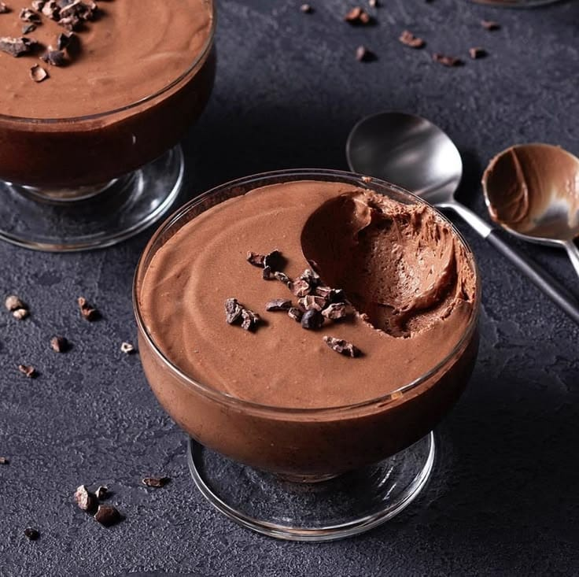

Mousse de chocolate
TécnicaPâte à bombe
Mousse muy cremosa, bastante grasosa, textura endeble y fácil de deformar con una consistencia sedosa. La grasa aportada en la yema de huevo ayuda a que la mousse tenga una textura agradable, pero tiene un toque de presencia sobre todo si se consume sola.